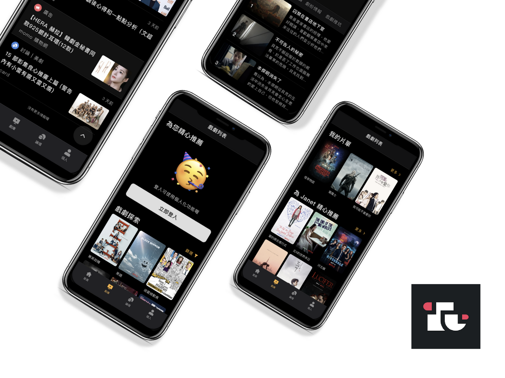

UIUX Dramates
>
目前有許多戲劇相關文章與網站，也有專屬戲劇討論版供用戶發表言論。 顯現用戶對於戲劇資訊與討論需求甚高，但就目前現有戲劇討論版而言， 皆僅供發文及留言、互相交換資訊之功能，較屬於被動行為模式，缺乏一 結合討論及主動提供戲劇資訊的平台。故實習公司決定為使用者打造一整 合型戲劇資訊行動服務平台。
專案時間：2019.12 - 2020.05
專案負責項目：問卷設計與分析、輿情分析、內部焦點團體訪談、與專案經理共同發想功能、狩野分析與易用性測試
為有在追劇且會使用戲劇討論版的使用者打造一整合型戲劇資訊行動服務平台。
利用內部焦點訪談與網路問卷(N=144)，探索追劇習慣者之追劇習慣，主要發現有5：
1. 追劇前中後期，有9成追劇者會收集該劇的相關資訊，以便自己更融入劇情
2. 評論會決定是否追劇之參考指標，也能攝取多方觀點，並有5成追劇者會看討論區
3.
演員長相、劇情好壞，會決定一齣劇的成敗
4. 能追蹤自己想看的劇，也能存下自己想看什麼劇
5. 整體而言，劇情、分析文、評論及演員資訊、作品為關鍵需求。
初步整理追劇者對於資訊的接受行為模式，以供設計團隊在設計資訊呈現順序時，較符合使用者習慣：
1.
在追劇前期會先著重看戲劇相關資訊
2. 在追劇期間會著重看討論區以獲得多方觀點
3. 在追劇中後期會開始密切關注該劇相關新聞
4. 在追劇後期會開始找尋與該劇相關的戲劇作品
針對先前市場探索的結果與產品經理討論出第一版功能概念發想。除了納入市場探索之功能外，也有專案經理對產品功能的想法。並透過狩野分析進行產品第二版功能概念發想。最後依據先前市場探索與狩野分析之結果，再依據老闆與專案經理之想法，得出產品確切功能。

有鑒於開發團隊對於產品功能有許多不同的聲音，欲藉由狩野分析探索對使用者來說相對吸引人的功能，並與開發團隊討論其可行性。
招募5位受測者，針對第開發出之第一版原型利用放聲思考法進行易用性測試與半結構式訪談，想得到：
1.
使用者在找尋特定影視作品時，是否操作順暢
2. 使用者在篩選出特定類別作品時，是否操作順暢
3. 使用者是否可以順暢瀏覽特定作品討論版文章
4. 對於產品是否還有其他期待
進行易用性測試中，主要發現問題有3：
1. Tab Bar 非固定於下方，操作時使用者常忘記自己目前在哪個頁面中
2. 返回鍵不易尋找
3. 戲劇分類標籤顏色對比度太低，常被使用者所忽略
透過半結構訪談，整理出使用者對產品期待有4：
1. 新增訪客登入選項
2. 導入片源
3. App 專屬內建討論區 (目前為外連討論版)
4.
針對不想提早知道劇情發展的使用者，提供防雷線以避免提早知道劇情
整理易用性測試並依據開發難度與未來、現有產品面給出改良建議。
針對現有產品面：
1. Tab Bar 改以Fixed
方式設計，以防止使用者迷失於產品中，並延長體驗(參考Apple
Store)
2. 戲劇分類標籤顏色對比度、位置與文字大小調整
3. 加入防雷線以防止使用者被劇透
針對未來產品面：
1. 新增訪客登入功能
2. App 內建專屬討論區開發